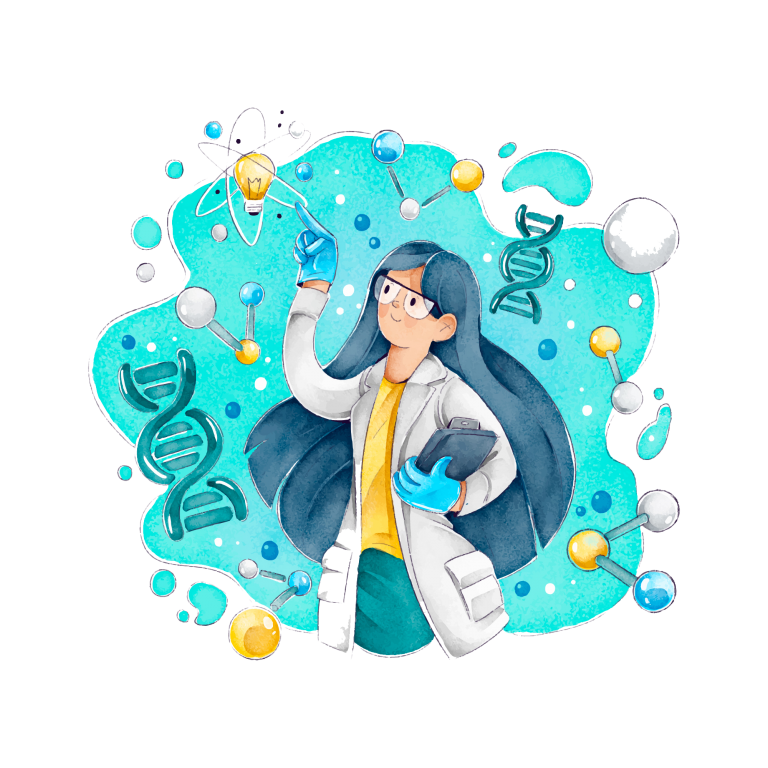

Mujeres En La Programación
Podemos decir que estas mujeres pueden ser
- Pioneras
- Ada Lovelace
- Grace Hopper
- Hedy Lamar
- Alan Turing
- Innovadoras
- Karen Spärck Jones
- Donna Dubinsky
- Fei-Fei Li
- Joy Buolamwini
Hablaremos De Algunas De Estas Increibles Mujeres
Ada Lovelace

¿Quién fue?
Hija del poeta Lord Byron y matemática Annabella Milbanke.
Considerada la primera programadora de la historia.
¿Qué hizo?
Colaboró con Charles Babbage en la Máquina Analítica, una computadora precursora.
Describió en detalle cómo la Máquina Analítica podía ser utilizada para realizar una variedad de tareas, incluyendo cálculos matemáticos y manipulación de símbolos.
Su trabajo se considera el primer algoritmo informático.
Legado
Influyó en el desarrollo de las computadoras modernas.
En su honor, se creó el lenguaje de programación Ada y se celebra el Día de Ada Lovelace cada año.
Grace Hopper

¿Quién fue?
Almirante de la Marina de los EE.UU. y pionera en informática.
Inventora del lenguaje de programación COBOL y del concepto de compilador.
¿Qué hizo?
Desarrolló COBOL para facilitar la programación.
Descubrió el primer "bug" informático y acuñó el término.
Legado
Influyó en el desarrollo de lenguajes de programación modernos.
Considerada una figura clave en la historia de la informática.
Fei-Fei Li

Científica informática pionera en IA
Fei-Fei Li es una líder reconocida en el campo de la inteligencia artificial (IA), especialmente en visión por computadora y aprendizaje profundo.
Cofundadora de ImageNet, un conjunto de datos crucial para el avance de la IA.
Dirige el Instituto de IA Centrada en el Humano (HAI) en Stanford y es Jefa Científica de Google Cloud AI.
Aportes
- ImageNet: Proyecto fundamental para el desarrollo de la IA, permitiendo entrenar algoritmos de reconocimiento de objetos con mayor precisión.
- Aprendizaje profundo: Impulsó la investigación y aplicación del aprendizaje profundo, un enfoque clave en la IA moderna.
- centrada en el ser humano: Aboga por un enfoque ético, responsable e inclusivo de la IA.
Reconocimientos
Premio Turing 2018, considerado el "Premio Nobel de la Informática".
Nombrada por Fortune entre las "10 Mujeres Más Poderosas del Mundo" en 2019.
Joy Buolamwini

Pionera en la lucha contra el sesgo algorítmico
Científica informática e investigadora que expone el sesgo en la IA.
Cofundadora de la Algorithmic Justice League (AJL) para combatir el sesgo algorítmico.
Aportes
Demostró el sesgo racial y de género en los sistemas de reconocimiento facial.
Promueve la transparencia, la diversidad y la rendición de cuentas en el desarrollo de IA.
Educa sobre los riesgos y beneficios de la IA.
Reconocimientos
Premio Omidyar 2018 y Premio MacArthur "Genius" 2020.
"100 Mujeres Más Influyentes del Mundo" por la revista Time en 2020.
Frase destacada
"No podemos permitir que la IA perpetúe las mismas injusticias que ya existen en nuestra sociedad." - Joy Buolamwini
Aprende Sobre Mujeres Programadoras

Esta pagina usa iconos de
flaticon